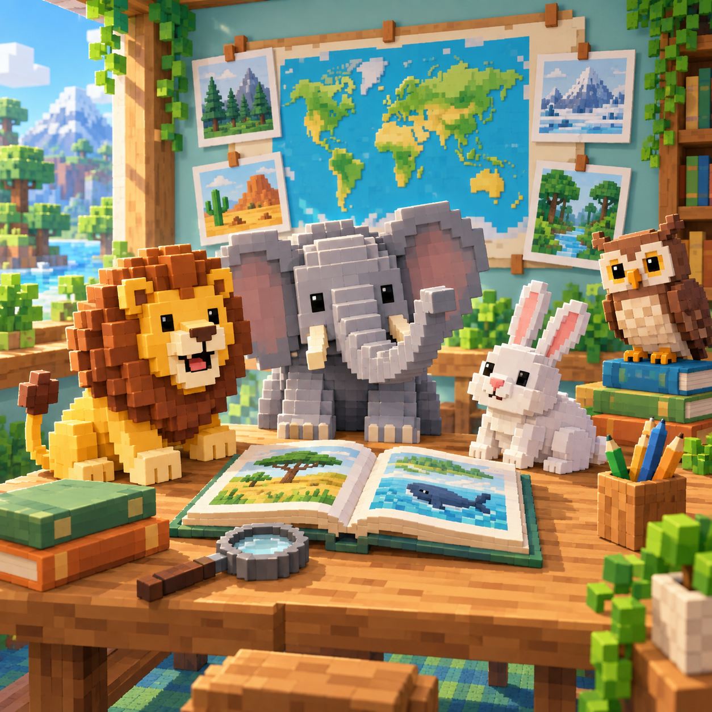

Quiz

Quiz
Answer 30 picture, habitat, feature, action, and food investigations.
Stages cleared: 0 / 30

Animal Quiz is a free bilingual Kids knowledge game with 30 saved stages and ten questions in every stage. Its animal library covers 20 familiar species, including lions, elephants, giraffes, zebras, penguins, whales, pandas, koalas, owls, frogs, pets, and farm animals. Early questions pair a clear portrait with a short body-feature clue. Later investigations blur the portrait, turn it into a silhouette, or ask the player to combine facts about habitat, behavior, food, and appearance. Every fifth stage is a Junior Expert Check that combines ideas already introduced. There is no countdown and a wrong choice does not end the stage, so children can pause, compare the evidence, and try again.
The game is presented as a sequence of animal investigations rather than a fictional rescue or battle. The player acts as an animal observer building a field notebook one correct identification at a time. A portrait supplies visual evidence, while the written clue explains something true about the same animal: where it lives, what it eats, how it moves, or which feature makes it recognizable. Completing ten identifications closes the current notebook chapter and unlocks the next investigation. Finishing Stage 30 means the player has worked through all six lesson groups and completed the final mixed-evidence check.
The animals do not appear as enemies, prizes, or decorations detached from the questions. Each image, name, and clue refers to the same target. For example, a lion may be identified through its mane, African grassland habitat, and pride behavior; a penguin can be connected to cold coasts, fish, and huddling; and an elephant can be recognized through its trunk, plant diet, and water-spraying behavior. This factual connection is the central purpose of every round.
No account, online leaderboard, purchase, timer, life meter, or formal grade is involved. Clearing all 30 stages is the campaign success condition. There is no separate failure screen because an incorrect choice is treated as part of learning rather than the end of an attempt. Clearing a known stage again supports review and gives another chance to achieve a ten-out-of-ten result without erasing earlier progress.
Stages 1–5, Picture Introductions: clear portraits and feature clues establish the animal library. Stage 5 adds a second clue and four choices. Stages 6–10, Habitat Homes: mystery-image treatment makes the written habitat evidence important; Stage 10 combines habitat and feature facts. Stages 11–15, Feature Detectives: silhouettes remove color and test outline recognition, ending with a mixed silhouette check.
Stages 16–20, Animal Actions: players identify animals through movement and social behavior, then combine behavior with habitat at Stage 20. Stages 21–25, Food and Families: every question uses four choices and asks what the target animal eats, with Stage 25 adding appearance evidence. Stages 26–30, Junior Expert Mix: mystery images and silhouettes return with two clues at a time. Stage 30 is the final checkpoint: four choices, a silhouette, and three connected clues about feature, habitat, and behavior.
The checkpoints are Stages 5, 10, 15, 20, 25, and 30. They do not introduce surprise rules before teaching them. Each one recombines the preceding chapter's evidence, allowing children to notice whether they relied only on the picture or can also reason from facts. Difficulty therefore grows by changing which evidence is available, not by making targets smaller or imposing speed pressure.
Ten questions make a stage long enough to revisit a lesson without turning a Kids session into a long test. The first five stages establish confidence through recognizable portraits; later chapters change the evidence instead of simply increasing a score target. Blur and silhouette are visual teaching tools, not hidden hitboxes: the answer remains available through large text buttons and the image keeps a useful accessible name. Three choices support the introduction, while four choices make later comparison more meaningful.
The same fixed logical layout scales uniformly on phones, tablets, short landscape screens, and desktop browsers. Touch, mouse, and keyboard activate the same native answer controls. The learning pause counts only visible play time, so switching away from the page cannot silently skip a fact. This game differs from WeightPlay matching and action games by making factual evidence the whole decision. It also follows the Kids policy: no advertising request, ad reserve, account, purchase, competitive ranking, or diagnostic claim.
Animal Quiz can support conversations about animal names, habitats, diets, body features, and behavior. Children who are still learning to read can play with an adult who reads each clue aloud and asks which evidence helped. The saved stars and Skill Report describe only this play session; they are not a school grade, IQ result, developmental diagnosis, or comparison with other children. Progress stays in the current browser and may disappear if its local storage is cleared. The game does not require a child profile and its Kids route requests no advertising.